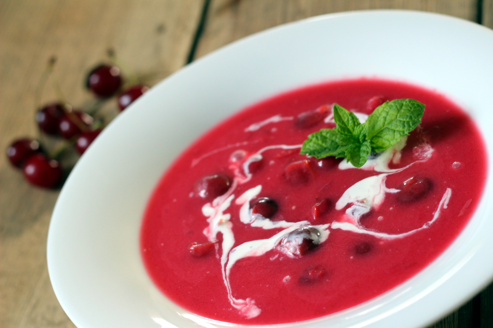

Meggyleves
Hozzávalók:
- 0.5 kg meggy (jelen esetben mélyhűtött)
- 4 ek cukor
- 1 kk só
- 2 db fahéjrúd
- 5 db szegfűszeg
- 1.8 dl tejföl
- 1 púpozott ek finomliszt
- 2 l víz
Elkészités:
- A meggyet a vízben feltesszük főni.
- Hozzáadjuk a sót, a cukrot, a fahéjat és a szegfűszeget. Az utóbbit teatojásba helyezzük, hogy amikor kész a leves, el tudjuk távolítani a fahéjjal együtt.
- Kb. 15-20 perc múlva behabarjuk a levest: a tejfölben simára keverjük a lisztet, egy kevés vízzel hígítjuk és szűrőn keresztül hozzáöntjük a leveshez, jól elkeverjük és összeforraljuk.
Vissza a főoldalra